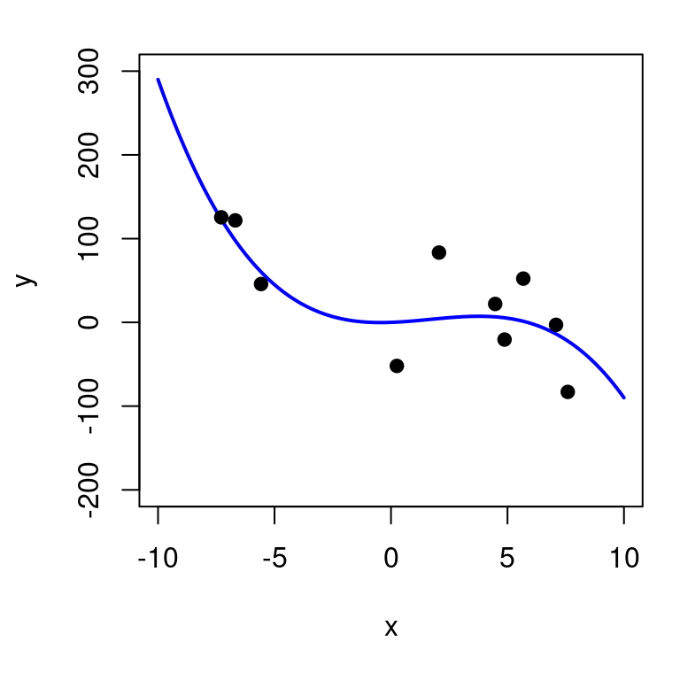
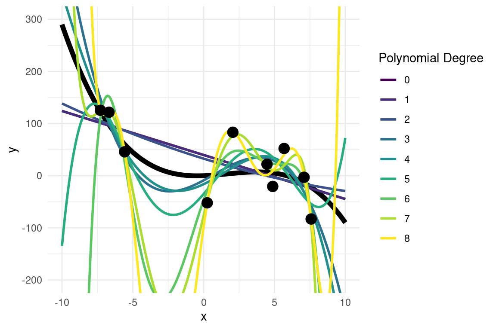
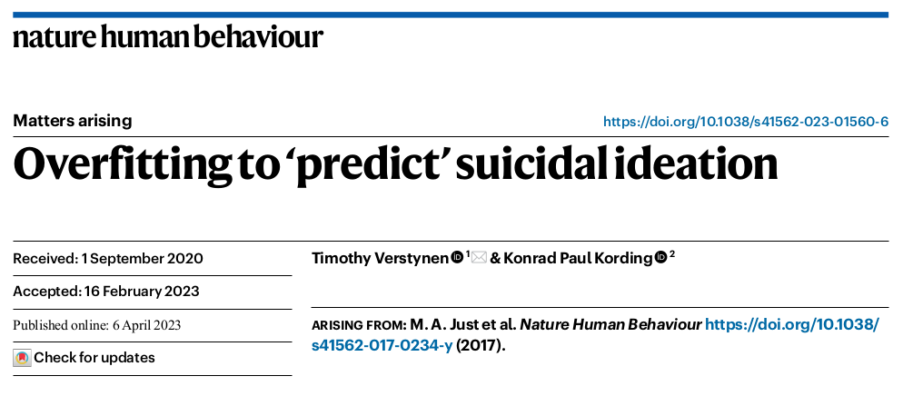

“as a set of methods that can automatically detect patterns in data, and then use the uncovered patterns to predict future data, or to perform other kinds of decision making under uncertainty” (Murphy, 2012)
Supervised Learning
- We have a training dataset containing some with input features \(X\) and target labels/outcomes \(y\)
- The algorithm learns a function \(f(X)\) that predicts \(y\) accurately
- Learning is achieved by minimising a cost or loss function (i.e. an error metric that tells us how bad the predictions are compared to the observed \(y\))
- Examples: Regression (continuous outcomes), Classification (categorical outcomes)
Unsupervised Learning
- We only have input features \(X\), with no labeled outcome
- The algorithm finds structure in the data (e.g., clusters, latent factors)
- Much less well-defined problem since we don’t know usually know in advance what to look for.
- Examples: Clustering (e.g., gaussian mixture models), Dimensionality Reduction (PCA)
Model: \[y = \beta_0 + \beta_1 X_1 + \ldots + \beta_k X_k + \underbrace{\epsilon}_{\text{residual}\\ \text{error}}\]
The loss function is the mean squared error: \[\text{MSE} = \frac{1}{n}\sum_{i=1}^n \epsilon_i^2 \]
Parametric models are those which can describe/predict the data with a fixed number of parameters.
Non-parametric models tend to now have a fixed number of parameters, and tend to make milder assumptions
There isn’t a precise and universally accepted definition of the term ‘nonparametric’.
ML learning problems tend to be high-dimensional (e.g. datasets can easily have thousands or more feature \(X\) that we can use for learning and prediction).
The amount of data that we need to learn effectively grows exponentially with the number of features
Main goal of supervised ML is to make predictions on novel inputs not seen before (generalization)
When we fit highly complex/flexible model we need to be careful to not overfit the data, as this would lead to worse performance on unseen (new) data
# assume a "true" underlying function
x <- seq(-10, 10, length.out = 200)
y <- x + x^2 -0.2*x^3
# simulate some noisy observations
x_obs <- x[sample(1:200, 10)]
y_obs <- x_obs + x_obs^2 -0.2*x_obs^3 +rnorm(10, mean=0, sd=50)
# store in a dataframe
d <- data.frame(y=y_obs,
x=x_obs)
# plot
plot(x,y, type="l", col="blue", lwd=2, ylim=c(-200, 300))
points(x_obs, y_obs, pch=19)
Known “true” model: \[y = x + x^2 -0.2x^3\]
We can fit polynomial functions of increasing order using lm()
We can fit polynomial functions of increasing order using lm()
We can use a for loop to programmatically fit models of increasing complexity
For each model, let’s compute the error in the training set
We know the “true” generative model and we can use to generate new data unseen by our models
# generate unseen data
x_new <- runif(100, min=-10, max=10)
y_new <- x_new + x_new^2 -0.2*x_new^3 + rnorm(100, mean=0, sd=50)
d_new <- data.frame(x = x_new, y=y_new)
test_error <- rep(NA, length(m))
for(i in 1:length(m)){
pred_y <- predict(m[[i]], newdata=d_new)
test_error[i] <- mean((d_new$y - pred_y)^2)
}The higher order polynomials are clearly too complex and overfit the data

The key idea is that we put aside some data when training the model, and then use it for evaluate its performance
Example code 1: evaluating a linear model on a hold-out set
# Suppose 'mydata' has columns: y, X1, X2
mydata <- read.csv("mydata.csv")
set.seed(123) # for reproducibility
train_index <- sample(seq_len(nrow(mydata)), size = 0.7*nrow(mydata))
train_data <- mydata[train_index, ]
test_data <- mydata[-train_index, ]
# Fit model
model <- lm(y ~ X1 + X2, data = train_data)
# Predict on test data
preds <- predict(model, newdata = test_data)
# Calculate Mean Squared Error
mse <- mean((test_data$y - preds)^2)Example code 2: LOO cross-validation
# Suppose 'mydata' has columns: y, X1, X2
mydata <- read.csv("mydata.csv")
n <- nrow(mydata) # Total number of observations
preds <- numeric(n) # Placeholder for predictions
# Leave-One-Out Cross-Validation
for (i in 1:n) {
# Define training and test sets
train_data <- mydata[-i, ] # All except the i-th observation
test_data <- mydata[i, ] # The i-th observation
# Fit the model
model <- lm(y ~ X1 + X2, data = train_data)
# Predict for the left-out observation
preds[i] <- predict(model, newdata = test_data)
}
# Compute overall Mean Squared Error
mse_loo <- mean((mydata$y - preds)^2)No single model or approach is universally the best across all problems.
A method that performs well in one domain may fail in another.
Model selection depends on problem-specific assumptions and data characteristics.
Load the california_housing_train.csv data from Moodle and find the best predictive model to predict house value (medv).
Aim to build a model that generalizes well to new data.
Use any approach you find suitable—incorporate interactions, higher-order (polynomial) terms, and evaluate performance using hold-out samples.
Once you’ve selected a model, assess its predictive performance on out-of-sample data.
After these steps, I will release a test set on Moodle, allowing you to check your model’s true predictive performance on unseen data.
| Variable | Description |
|---|---|
| medv | Median value of owner-occupied homes (in $1000s) |
| crim | Per capita crime rate by town |
| zn | Proportion of residential land zoned for large lots |
| indus | Proportion of non-retail business acres per town |
| chas | Charles River dummy variable (1 if tract bounds river, 0 otherwise) |
| nox | Nitrogen oxide concentration (parts per 10 million) |
| rm | Average number of rooms per dwelling |
| age | Proportion of owner-occupied units built before 1940 |
| dis | Weighted distance to employment centers |
| rad | Index of accessibility to highways |
| tax | Property tax rate per $10,000 |
| ptratio | Pupil-teacher ratio by town |
| lstat | % lower status of the population |
| lon | longitude |
| lat | latitude |
Dataset bias More data is not always better.
Leakage of information from test set to training set (“feature hacking”, “double-dipping”)
Retraction
Using information from data in a validation set to determine the structure of a model leads to inflated estimates of performance. This can happen either by selecting the observations (for example, only including the subset of participants that maximize validation set performance) or features (for example, applying arbitrary transformations of variables based on validation set performance) based on information from what should be a protected part of the sample. Our re-analysis shows that the classification results reported by ref. 3 are probably inflated due to the presence of information leakage somewhere in the feature selection process.
Algorithmic Bias. ML models can reinforce or amplify existing biases in data, leading to unfair or discriminatory outcomes.
Transparency & interpretability. Black-box models (e.g., deep neural; networks) can be hard to interpret. Would you trust an AI to make life-changing decisions (hiring, loans, medical diagnoses) if it can’t explain why?
Accountability. Who is responsible when ML systems make wrong decisions? (Companies? Developers? Users? Governments?). There is a need for clear regulations.